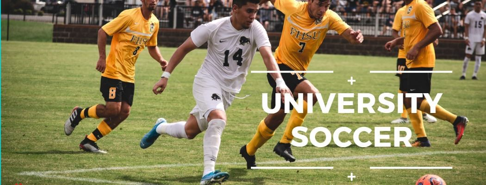
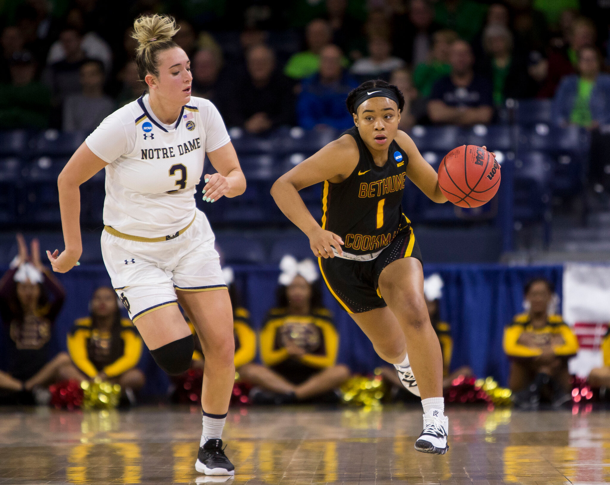
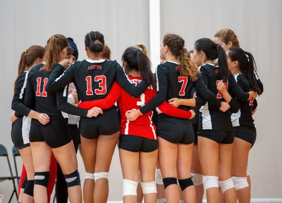

Athletics
1. Soccer
Some suggest that the history of soccer dates back as far as 2500 B.C. During this time, the Greeks, Egyptians, and Chinese all appear to have partaken in games involving a ball and feet. Most of these games included the use of hands, feet, and even sticks to control a ball. The Roman game of Harpastum was a possession-based ball game in which each side would attempt to retain possession of a small ball for as long as possible. The Ancient Greeks competed in a similar game entitled Episkyros. Both of these pursuits reflected rules closer to rugby than modern day soccer.
2. Basketball
Lacking a safe activity to occupy his young athletes during the long cold Springfield, MA. winter of 1891, YMCA International Training School physical education teacher James Naismith got creative. He nailed peach baskets to the lower rung of his gymnasium’s balcony, dug up an ‘association football’ (known today as a soccer ball), and soon hatched the rules for what would later become a game with close to a billion devotees: basketball.However, James Naismith’s creation would look foreign to today’s rabid fans. First, to lower the risk of injury, players were not allowed to run with nor dribble the ball. Thus, the original game was more akin to modern-day Ultimate Frisbee (where receivers of a pass must remain in place) than to the high-flying, fast-paced spectacle that is modern basketball. Additionally, the first game of basketball, played on December 21, 1891, was a nine- to-a-side slow-paced affair with a final score of 1-0. The sole basket came on William Chase’s 25-foot heave that managed to come to rest in the bottom of the peach basket.
3. Volleyball
Volleyball was invented in 1895 by William G. Morgan, physical director of the Young Men’s Christian Association (YMCA) in Holyoke, Massachusetts. It was designed as an indoor sport for businessmen who found the new game of basketball too vigorous. Morgan called the sport “mintonette,” until a professor from Springfield College in Massachusetts noted the volleying nature of play and proposed the name of “volleyball.” The original rules were written by Morgan and printed in the first edition of the Official Handbook of the Athletic League of the Young Men’s Christian Associations of North America (1897). The game soon proved to have wide appeal for both sexes in schools, playgrounds, the armed forces, and other organizations in the United States, and it was subsequently introduced to other countries.